LESSRec：让语义 ID 的每一层读取对应历史
LESSRec 研究语义 ID 生成式推荐中的历史组织。作者 Shangxin Yang、Zongwei Wang、Jing Long、Min Gao 来自重庆大学，Junliang Yu 来自 Griffith University，第一作者主机构为重庆大学。论文首版于 2026 年 10 月 27 日公开，本轮于北京时间 10 月 30 日核验。论文入口。本轮未核验到本文独立代码仓库，未运行作者训练与评测复现。以下数值均为论文报告值，实验观察与迁移判断分别说明。
预测某一语义层的目标 token 时，同层历史往往更有信息，而其他层可能引入干扰；但只访问一个层级又可能丢失历史物品的整体语义。LESSRec 将同层证据与物品级语义分开组织，再在解码时融合。
1. 背景和问题
传统序列推荐通常为每个物品学习一个独立向量，再根据行为序列构造用户表示并在候选库打分。语义 ID 生成式推荐改变了输出接口：它先把物品内容表示量化为几个离散码，再让序列模型逐个生成下一个物品的码。残差量化的第一层解释较大的语义成分，后续层继续解释剩余误差，因此多个 token 共同描述一个物品，生成顺序具有粗到细结构。这个接口让语义相近的物品共享部分码，同时避免输出层只由完全独立的物品编号构成。不过，“标识符分层”并不自动意味着模型的历史建模也尊重层级。把所有历史码按物品顺序直接串起来，编码和解码注意力仍可能跨越所有层级进行混合。
LESSRec 提出的疑问很具体：如果当前要生成第二层语义码，那么历史物品的第二层码是否比第一层、第三层和第四层更有用？例如两个历史物品都有四个残差码，目标也有四个。标准编码器把八个历史位置混合，第二层目标查询可以访问所有位置。这种设计表达能力强，却要求有限深度模型自己学会哪些层级是相关证据。残差量化使各层承担不同语义成分，同层码的时间轨迹可能有更直接的预测关系；跨层码虽然参与同一物品的完整描述，但未必与当前输出码处于相同语义粒度。论文并不认为所有跨层关系都无用，而是认为无区分混合不一定是最合适的默认访问方式。
从训练信号看，下一物品只有一个观测目标，监督本身稀疏。模型既要学习用户偏好，又要识别量化层级之间的结构，还要在大量候选码中区分正确分支。当有用同层证据和其他层级一起被加权汇总时，有用信号可能被稀释；历史越长，混合位置越多，这个问题可能更明显。另一方面，直接永久删除跨层信息也不理想，因为单层只能描述物品的一部分。某个物品在多个语义成分上的组合可能很重要。作者因此把问题拆成两步：先让各层历史形成相对纯净的上下文，再提供一条明确的物品级语义通道，避免要求同一个注意力池同时承担层级选择和整体语义恢复。
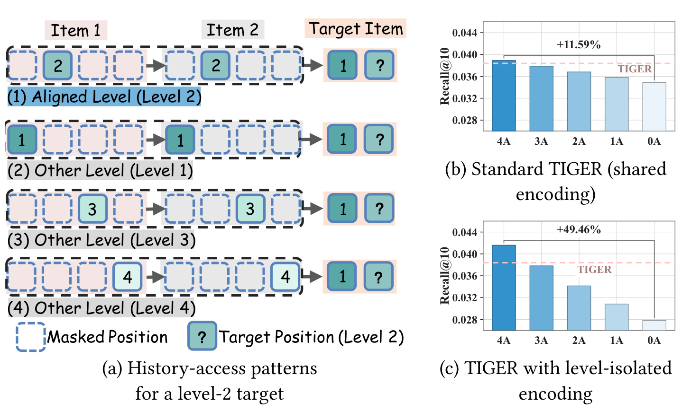
Figure 1 左侧以第二层目标为例，绿色位置表示允许访问的历史码。第一种选择访问历史第二层，其他选择访问不匹配层。右上是在普通 TIGER 编码下改变解码端访问方式，右下是在历史编码已经隔离各层后进行相同测试。横轴从四个目标位置全部对齐的 4A 到全部错层的 0A，柱子对相同对齐数的多种配置求平均，纵轴是 Games 的 Recall@10，虚线是原 TIGER 基线。图中 11.59% 和 49.46% 都是同一编码设置下 4A 相对 0A 的提高，不能解读成最终 LESSRec 相对 TIGER 的主结果增益。尤其右下的错层访问受到严格隔离，缺少匹配证据，因此差距更大；这说明隔离后同层信号更容易被观察到，并不是已经证明最终架构有百分之四十九的线上收益。两幅图的干预帮助定位历史访问问题，但模型、任务和分母必须保持对应。图例与虚线也提示一个重要细节：对齐数下降并不是给模型增加无条件有用信息，而是在固定预测位置上改变可见历史，测试的是信息选择而非扩容。
该观察与“注意力越自由越好”的直觉存在张力，但不构成一般性反例。充分大的模型理论上可以学会忽略无关位置；实际模型容量、训练数据、初始化和优化预算有限，结构约束可能减少识别相关证据的负担。附录分析也在限定条件下讨论这一点：假设残差成分能够被准确恢复，各层轨迹彼此独立且各自满足一阶 Markov 过程，同层历史可以保留完整历史的预测信息；另一个简化单头模型显示混合层级会削弱初始化梯度信噪比。这些假设并不是 RQ-VAE 训练自动满足的性质，也不证明真实多层模型的全局收敛或所有量化器都应隔离层级。因此论文的主要支持仍来自干预和消融，理论提供解释而不是替代实验。
本文保持量化后的物品到语义 ID 映射固定，不提出新的物品词表学习算法。这个边界使它更容易与现有语义 ID 管线比较：相同码表下，改变的主要是历史编码和目标查询。训练时使用真实目标前缀，推理时则需要逐步生成并通过合法 ID 前缀树限制候选。编码端的层级隔离并没有消除输出自回归依赖，也没有把粗到细生成变成各层完全独立预测。目标前缀仍向后续层传递已经生成的信息，这与历史分支的可见性约束是两个不同维度。
对于推荐工程，问题对应的是“同一种历史的不同语义分量如何提供给目标”，而非增加更多外部用户特征。它可能帮助使用残差量化、短语义码和编码解码架构的召回模型，也可能启发多粒度内容表示的检索组织；但本文没有广告点击率、转化率、线上召回增益或长期用户反馈实验。对大模型读者，值得借鉴的是把多尺度信息分路后再融合的设计，而不是把语义码层直接等同于自然语言的词法或推理层。残差量化层来自固定预处理，各层含义随码表学习而变化，因此部署时仍需检查目标数据上的层级可分性。
另一个容易被名称掩盖的边界是，“相同层级”不等于“同一个语义值”。历史第二层有多个不同码，模型仍需在这些值之间学习顺序与偏好，并不是只挑与目标相等的历史码。它也没有先知道目标码值才筛历史：解码器知道当前输出的是第几层，却尚不知道这一层最终取哪个值，因此按层选择是可在推理时实施的结构规则，不依赖真实目标泄漏。只有目标前缀在训练时使用真值，推理时改为已生成前缀；这与历史层级筛选的可用性无冲突。把层编号、码值和目标监督分开，才能正确理解干预实验和模型接口。
2. 方法
2.1 同层历史编码与目标层访问
论文把按时间排列的历史物品表示为分层语义码。若每个物品有多个层级，输入保留物品顺序，附加一个结束符；同层历史则抽取每个历史物品在同一层的码。
符号解释：$T$ 是历史物品数，$L$ 是每个物品的语义层数，$s_{i,r}$ 是第 $i$ 个物品第 $r$ 层的离散码，$H_r$ 是该层沿时间的序列。历史位置集合记为 $\mathcal P_r$，结束位置为 $p_{\mathrm{end}}=LT$，$\mathcal P_{\mathrm{valid}}$ 排除填充。输入布局仍按物品拼接，层集合由位置索引识别，不需要重新学习另一套语义 ID。
层级隔离自注意力 LIS 在每个编码层都限制历史 token 只访问同层位置。EOS 可以汇聚所有有效位置，但普通历史位置不能反向读取 EOS，避免它成为跨层信息的中转站。编码器的输入是所有已观测码及其层编号，输出仍保留原物品与层级位置，因此后续可以分别进行同层读取和物品内部汇聚。
符号解释：$q$ 和 $j$ 是查询与键的零起始输入位置，$M^{\mathrm{enc}}$ 加到注意力分数上，零表示可见，负无穷屏蔽对应位置。这个约束使最终状态 $h_{i,r}$ 包含同层其他历史物品的信息，而不会混进其他层。这里的同层序列可以在已观测历史内部进行上下文建模；预测目标本身不在编码历史中，因此不应把“可访问整段过去历史”误认成读取未来目标。
层级对齐交叉注意力 LAC 进一步要求解码器预测第 $r$ 层时只读取编码历史的第 $r$ 层，并保留 EOS 特例。仅有 LIS 不够，因为解码器仍可能把多个纯净层重新混在一起。目标位置决定应该选择的层编号，已生成前缀决定当前查询内容；选择规则不读取尚未知晓的真实目标码值，因而可用于推理。
符号解释：$t$ 是零起始解码查询位置，前 $L$ 个位置预测语义码，最后一个预测 EOS，$j$ 为编码历史位置。LIS 约束“历史状态如何形成”，LAC 约束“目标查询读哪种历史”，两者作用阶段不同。由于 LAC 允许目标查询读取聚合过所有层的 EOS，严格说解码器并非完全无法获得跨层信息；隔离保证的是历史语义 token 的编码状态，而不是整个网络中所有信息通路都互相独立。
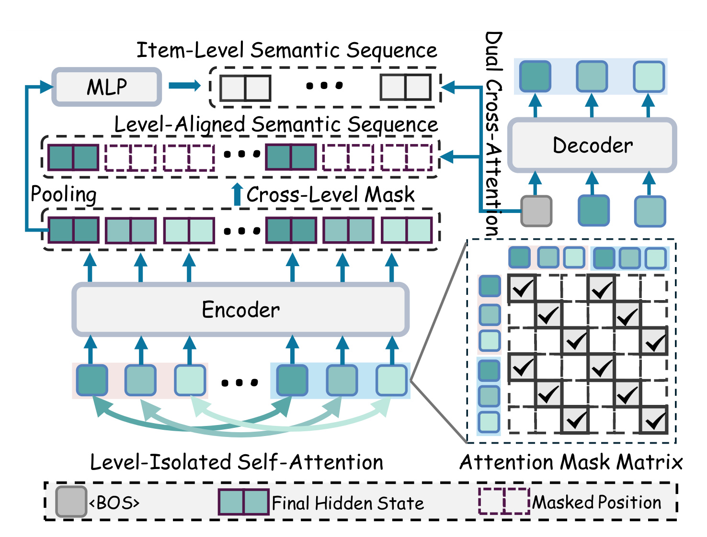
Figure 2 从下往上读：底部是按物品排列的历史语义码，颜色深浅表示语义层级，同层之间连线表示 LIS 允许的上下文信息流。右下的 mask 矩阵中勾号是可见位置，空白表示屏蔽。编码后的状态一方面继续保持每个物品的层级布局，经目标层选择形成同层分支；另一方面在物品内部汇聚，再经过 MLP 形成物品级分支。右上解码器用同一个查询分别读取两路记忆，输出目标的下一个语义 token。图中只画三层并省略 EOS，因此正文中的结束符例外不能从简图里直接看出来。重要区别在于，图中的“隔离”没有把物品级通道删除，池化恰恰是有意识地把同一物品的各层重新组合。模型不是先让所有码自由混合、最后再声称已经分离，而是在编码阶段维护层级约束，在需要整体语义的地方显式合并。训练和推理共用这些通路，区别主要是目标前缀来自真实序列还是模型已生成的序列，图中没有额外教师或推理时专用监督。
附录的解释可以浓缩为两个结论。在残差可分、层轨迹独立且一阶 Markov 的假设下，给定前缀后的最优预测损失由最近同层码决定；在更小的固定注意力模型中，其他层引入的噪声降低初始化梯度信噪比。
符号解释：$\mathcal R^*$ 是条件预测器能够达到的最小期望对数损失，$\mathcal H$ 为完整历史，$Y_k$ 为目标第 $k$ 层，$\mathrm H$ 为条件熵；$n$ 是独立样本数，$m=a_k$ 是同层注意权重，$a_r$ 为其他层固定权重，$\tau=1-2p$ 来自二元噪声率 $p$。不等式讨论初始化附近的简化模型，不是实际 Transformer 的全局训练保证。它支持“限制无关混合可能改善有限模型学习”，不能推出拥有跨层相关性的真实数据都满足同样优势。
2.2 物品级语义与双路交叉注意力
只保留同层可能缺少物品的完整描述。论文对同一物品的各层编码状态求均值，再施加带残差的投影，构成按历史物品时间排列的记忆。输入状态已经经过各自同层历史编码，因此物品记忆既有当前物品的各层信息，也包含同层上下文，不是未经编码的静态内容向量。
符号解释：$z_i$ 为层状态均值，$m_i$ 是残差投影后的物品表示，$W_1,W_2,b_1,b_2$ 为两层 MLP 参数，LN 为层归一化，GELU 为激活函数。残差保留均值信息并允许模型学习非线性修正。这里没有额外物品级自注意力层，因为每个输入状态已含历史上下文。平均只是作者选择的一种汇聚方式，附录拼接再投影反而更好，因此不能把均值写成理论最优。
解码器用同一查询读取两个不同长度的记忆，并用固定超参数融合。两路注意力具有不同位置含义：同层码在原序列中相隔 $L$ 个位置，物品级记忆则每前进一步就是一个历史物品，不能机械复用同一偏置解释。
符号解释：$Q$ 是解码查询，$R$ 是按原布局还原的历史码状态，$M$ 是物品级序列；MHA 为多头注意力，$M_{\mathrm{item}}$ 屏蔽物品记忆的填充，$B$ 为相对位置偏置，$E^{(h)}_{\mathrm{item}}$ 是第 $h$ 个头的位置偏置表，bucket 将相对距离映为离散桶。$\alpha\in[0,1]$ 是控制两路贡献的超参数，不是按用户动态产生的路由概率。目标既保留同层历史，又能读取物品整体语义，但新增分支带来额外计算，不能把信息更干净直接等同于速度更快。
2.3 自回归训练与层级专用编码器
模型联合训练编码器、解码器、物品投影和物品位置偏置，使用真实下一物品语义码及 EOS 的平均负对数似然，不增加辅助蒸馏或强化学习目标。训练中各位置读取真实目标前缀，tokenizer 及物品到 ID 的映射保持冻结；推理中使用前缀树约束的 beam search，只允许合法物品标识符分支。
符号解释：$\mathcal D$ 是历史与下一物品配对集合，$y$ 包括 $L$ 个语义码和一个 EOS，$\theta$ 为推荐模型参数。平均因子让样本数与目标长度得到归一化。训练前缀和生成前缀的差别仍然存在，因此本文的历史组织改进不等于解决自回归误差累积；前缀树约束保证 ID 合法，也不保证最相关物品一定留在有限 beam 中。
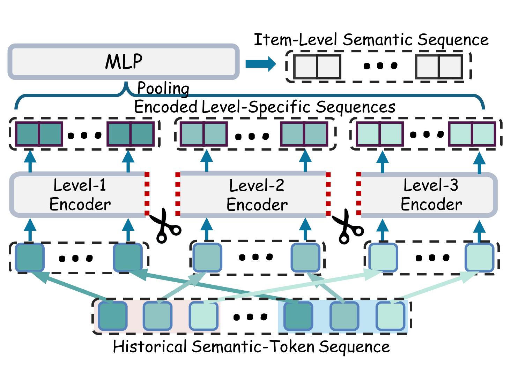
Figure 3 与 Figure 2 的关键差别在编码器，而不在解码器。底部仍是同一历史序列，中间按语义层拆成多个长度较短的序列，各自通过独立的编码层组；输出重新对应到物品和层级位置后，继续进入原来的物品汇聚与双路解码。剪刀符号表示把原有层预算分配给不同层级，不是复制多个完整原编码器，因此总参数不随层数成倍增加。图中各分支之间没有编码依赖，可以并行执行，但真实运行是否获得相同比例加速仍取决于实现、并发粒度和其他模块占比。各层分支的深度可以不同，默认四层语义码把六个编码层分成两层、两层、一层、一层。还原位置后可以继续用原 LAC 访问规则，保持输出接口一致。框架图没有画出每条分支的 EOS 平均，实际实现通过该平均得到一个共享结束状态，不应遗漏为所有分支分别向解码器暴露结束符。
图中的状态还原也有语义作用：同一物品的不同层即便经过不同深度，池化时仍必须根据原物品索引对齐。如果只是把各层输出顺次拼接而没有恢复索引，ILS 会混合不同物品，双路解码也会失去正确的相对位置含义。这是实现中应以小序列单测验证的对象关系，而非一个可忽略的排列优化。
符号解释：$D$ 是原编码总层数，$D_r$ 是分配给第 $r$ 层语义历史的深度，$h^{(r)}_{\mathrm{end}}$ 为该分支结束状态。最后两个量是忽略投影等项时累加的注意力矩阵位置数。普通 LESSRec 先计算完整历史位置对再屏蔽，仍承担长序列注意力成本；LESSRec+ 直接用短序列进入不同编码层，才减少这部分实际计算。相同总深度下，每层的专属参数和更短输入同时改变学习与执行，性能增益不能只归因于省 FLOPs。
3. 实验结果
3.1 数据、评估与主结果
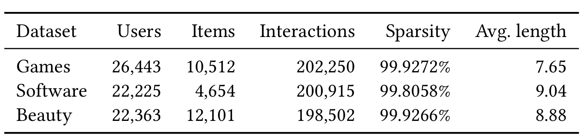
Table 1 给出三组数据的用户、物品、交互数、稀疏度和平均交互长度。Games 与 Software 使用 Amazon Reviews 2023，Beauty 来自较早的 Amazon 评论集合。经过迭代五核过滤后，Games 有 26443 个用户、10512 个物品及 202250 次交互，Software 为 22225、4654、200915，Beauty 为 22363、12101、198502。三者仍然非常稀疏，平均交互长度只有约八到九次，说明“历史建模”实验不等于数千次行为的工业长序列验证。论文把输入历史最多保留二十个物品，后续长度分桶也只覆盖这个区间。因此它适合回答中短序列中层级混合的影响，而不能直接证明在超长用户轨迹上成本或效果怎样变化。五核过滤排除了交互更少的用户物品，长尾冷启动适用性需要额外测试。还应避免把相同名称的 Beauty 与其他论文的数据版本混用：即使都叫 Amazon，年份、预处理、切分和候选评价不同也可能改变难度。
评估采用留一法，报告 Recall@5、Recall@10、NDCG@5、NDCG@10。TIGER、LESSRec 和 LESSRec+ 使用同一 T5-small 架构基础比较；语义 ID 由四层码构成，并分别测试 RQ-VAE、RQ-Kmeans、LETTER 三种 tokenizer。文本内容向量使用 Sentence-T5；方法没有在推荐训练过程中联合更新码表。训练从不同随机种子重复，主表为种子 42、43、44 的均值，显著性用配对检验。推理 batch 为 32，beam 为 10，使用前缀树约束。其他对照包括常规序列模型以及 RPG、CARE、DiscRec，架构规模并不完全相同，因此最能定位本文机制的是同一个 tokenizer 组内与 TIGER 的比较，而不是把所有模型差异解释成一项注意力改动的贡献。
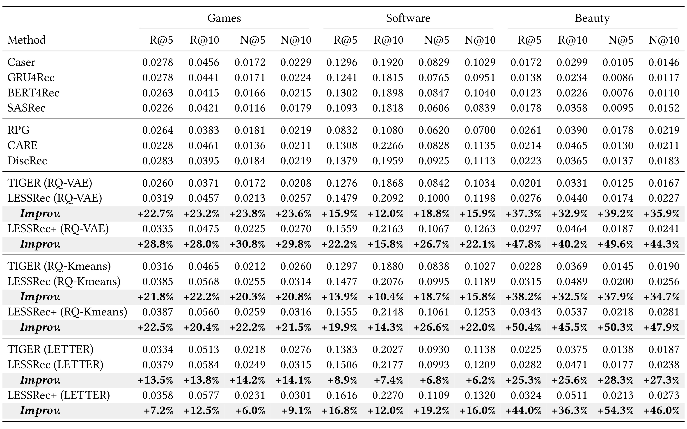
Table 2 按数据集分成三个大列组，每组包含两个召回和两个排序质量指标；下半部分进一步按 tokenizer 分组。灰色提高行的分母是同一个 tokenizer 组内的 TIGER，不是表里任意最强对照。以 RQ-VAE 为例，Games 的 R@5 从 0.0260 提升至 LESSRec 的 0.0319、LESSRec+ 的 0.0335，对应相对约 22.7% 和 28.8%，绝对差分别只是 0.0059 和 0.0075。Beauty 的 R@5 从 0.0201 到 0.0276 和 0.0297，改善更大；Software 从 0.1276 到 0.1479 和 0.1559。不同数据本身的基准命中水平差异很大，不能拿原始分数相互判定模型适合哪类业务。总体上两种方法在三种 tokenizer 内均优于对应 TIGER，说明收益不只依赖某一个码表训练方式。
同时，LESSRec+ 并非所有单元都超过 LESSRec。论文统计在三数据、三 tokenizer、四指标合计三十六项中，它提高三十一项。Games 的 LETTER 组就是明确反例：LESSRec 的 R@5 为 0.0379，Plus 为 0.0358，N@5 为 0.0249 与 0.0231；RQ-Kmeans 的 Games R@10 也从 0.0568 轻微降到 0.0560。这个现象表明把参数完全分开可能失去某些共享学习优势，或者默认深度分配不适合所有层。主表可支持“多数条件下更好且有资源收益”，不能写成 Plus 在所有设置上支配原方法。论文列出的相对增幅范围是各单元的变化，不是平均线上增益，更不是一个模型在所有任务都有五十个百分点提升。
读显著性还应留意样本量和比较单位。表中粗体表示相对本组 baseline 的配对检验通过，而不是 LESSRec+ 对 LESSRec 的每个差异都显著。三个种子的均值能够减少单次初始化偶然性，但未覆盖数据时间漂移和不同业务流量。留一法也只利用观测的下一交互，不提供未点击曝光或反事实偏好；离线命中提高可以说明排序目标更好地拟合该协议，不能直接预测转化、收入和长期满意度。本文没有线上 A/B，任何线上价值都属于后续验证问题。
3.2 组件消融与配置敏感性
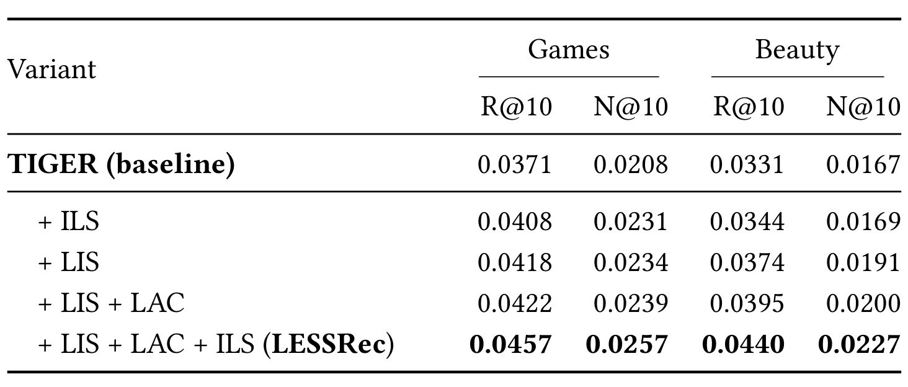
Table 3 在 Games 和 Beauty 上分离了三项设计。只加 ILS，Games R@10 从 0.0371 到 0.0408；只加 LIS 到 0.0418；LIS 再加 LAC 到 0.0422；三者结合达到 0.0457。Beauty 对应从 0.0331，经 0.0344、0.0374、0.0395，到 0.0440。单独提供整体语义有帮助，但不如隔离同层历史；编码侧隔离以后，再限制解码访问仍有改善；在 LIS 和 LAC 之上加物品级通道，进一步补回整体语义。这里最合理的解释是几条通路互补，而不是其中某个模块单独解释全部主表增益。该表是渐进组合，不包含所有可能交互项，也没有对所有模型预算完全匹配的替代模块，因此不能据此精确计算每部分独立贡献占比。尤其完整模型的最后一步同时保留所有已加入模块，不能把最后一行减第一行视为物品分支单独带来的差值。
排序质量也有对应变化。Games 的 N@10 从基线 0.0208 经单独 ILS 的 0.0231、单独 LIS 的 0.0234、LIS 加 LAC 的 0.0239，到完整模型 0.0257；Beauty 的完整值为 0.0227，明显高于基线 0.0167。召回与折损排序指标同向变化，比只挑一个命中指标更有说服力，但表中没有给出每个组件带来的训练成本。若系统资源严格受限，仍须把质量贡献与双分支代价同时记录，不能从质量消融单独决定部署配置。
表里还提醒一个实现问题：物品级记忆只是加一个分支，并没有让历史码状态本身重新跨层混合。LIS 与 LAC 都存在时，ILS 承担显式补充整体语义的职责；如果撤掉 LIS，再添加物品池化，输入状态可能已混合多层，功能就与完整模型不同。复现时要确认消融开关改变的是哪条通路，而不是只在代码里删一张 mask。因为 EOS 仍是可见的全层聚合状态，还需要保留其访问方向，避免为了“绝对隔离”而意外把原论文的 EOS 机制也改掉。
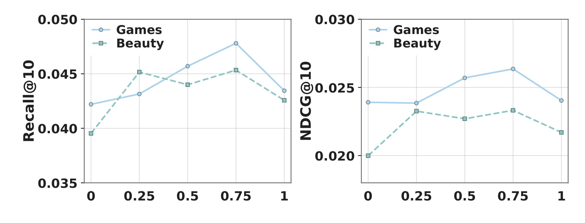
Figure 4 横轴是固定融合系数，左图纵轴为 Recall@10，右图是 NDCG@10；两条线分别对应 Games 和 Beauty。零只使用同层历史，壹只使用物品级语义，中间值保留二者。两组数据最优点都位于中间，支持整体语义与同层证据互补，但各指标最优位置并不完全相同。图上 Games 通常更偏向较大的物品通道权重，Beauty 的峰值或平台则不同，因此不存在一个由图直接推出的通用默认常数。曲线也不是在线按用户变化的自适应门控，而是多次固定配置实验。若把这张图用于设计动态路由，还需新增训练、预算与稳定性验证，不能把作者没有测试的自适应机制写成原方法的一部分。正文没有给出每个点的精确置信区间，细小波动不宜过度解释。
端点质量仍高于某些基线，并不否定互补性；需要比较的是相同模型去掉一条通路后的变化。调节该参数也改变两条分支反向传播的权重，故它同时影响学习过程和推理融合，不能视为只在推理阶段移动一个无训练代价的旋钮。
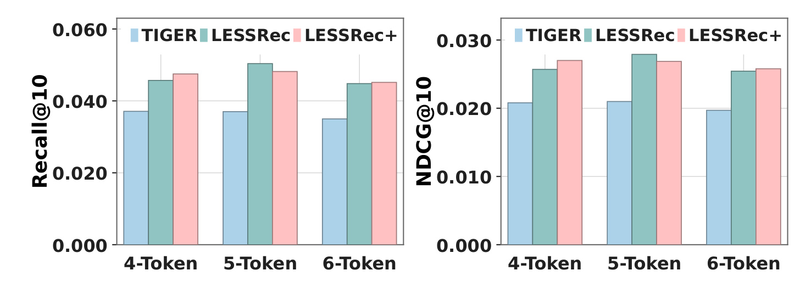
Figure 5 把每个物品的码长从四个调整到五个和六个，在 Games 上对比 TIGER、LESSRec 与 Plus，分别画 R@10 和 N@10。三个长度条件下，两种历史建模方法仍优于同长度基线，说明机制不是只适合四层编码。但增加长度并未让所有曲线单调变好，五层附近有的指标更高，六层不一定继续提高。更长 ID 会改变量化细度、输出步数和历史位置数量，不能把柱高变化只归因于“更细语义”。Plus 的层数分配也随长度改变：五层为两层加四个单层，六层全部单层，因此输入长度与各层模型容量同时变化。这个实验支持在所测长度范围内保持相对优势，不是预测任意长码都能不断提高质量。实际业务应把码冲突、候选规模、beam 解码成本和向量量化误差一起测量。
图中柱子没有把码长增加后的计算量匹配回原预算，因此也不是“同计算下更多码位更好”的证据。对于含层级结构较弱的量化器，拆开历史的效果还可能不同，本文的三种分词设置能够提供一定稳健性，但不覆盖所有离散标识设计。
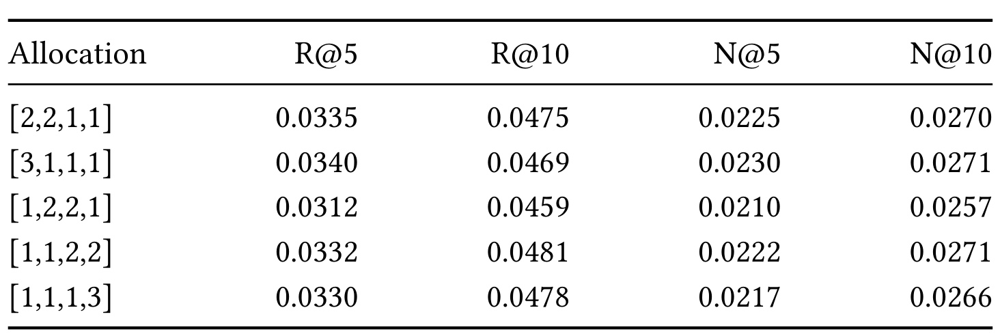
Table 4 的每行总编码深度都为六，变的是分给四个语义层的层数。默认两层、两层、一层、一层在各指标上有竞争力，但没有一行取得全部最好。三层、一层、一层、一层的 R@5 为 0.0340、N@5 为 0.0230，是表中最高；一层、一层、两层、两层的 R@10 为 0.0481，更高；两者 N@10 在报告精度上同为 0.0271。把额外层集中到中间的分配表现较差，却不能据此证明“中层不值得建模”，因为这是一个数据集和有限配置搜索。较合理的结论是深度分配会影响质量，而且粗层或细层都没有在四指标上稳定占优。所有列都比对应 TIGER 好，为层级专用编码提供一定鲁棒性支持，但尚未解决怎样自动分配容量的问题。
这个配置表还关系到公平成本比较。若给每个语义层都复制一个六层编码器，参数会增加，结果不再是文中 Plus；若把六层均匀拆成非整数深度，也不属于已测模型。复现应明确实际层对象是否共享、参数总数是否一致、输入是否按层重新组织，以及 encoder EOS 是否正确平均。共享词嵌入不等于共享所有编码参数；同总参数也不等于每个目标层具有同样的有效深度。把这些配置写清楚，才能判断质量变化来自结构约束还是隐含扩容。
3.3 计算复杂度、测量成本和失败切面
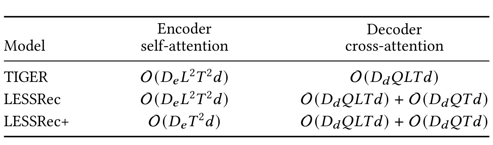
Table 5 对比的是注意力矩阵相关项，明确不包括线性投影、前馈层、重复 beam 步骤等开销。TIGER 和普通 LESSRec 的历史长度都是层数乘历史物品数，编码端仍然按完整位置对计算。Plus 在每个分支只处理同层的物品序列，分支总深度保持不变，因此这部分从含层数平方的项降到不含该因子的项。解码端没有全部消失：原同层历史分支仍然存在，还新增长度为物品数的整体语义分支。因此论文的理论计算缩减是特定运算项，不能直接写成端到端解码加速若干倍，更不能从符号式推导实际硬件延迟保证。普通 LESSRec 依靠 mask 改善信息访问，并未自动触发块稀疏核；如果先算完整分数再写负无穷，显存和算术成本仍然需要承担。
当语义层数固定为四，矩阵项表面上少了十六倍的层数因子，但真实测量并没有报告整个系统十六倍提速。原因包括解码仍需生成完整 ID、模型还有大量投影与前馈计算，以及短分支可能增加内核调度成本。反过来，若采用专门稀疏注意力内核，普通 mask 模型也可能得到与本文实现不同的效率结果；那将是新的系统实验，不能用这张理论表替它证明。
符号解释：$D_e$ 和 $D_d$ 是总编码与解码深度，$Q$ 是解码查询位置数，$L$ 是语义层数，$T$ 为历史物品数，$d$ 是隐藏维度。左边是普通编码器和 masked LESSRec，箭头右边是 Plus 编码器；解码第二项来自 ILS 新增分支。它仅表明不同序列组织对注意力矩阵乘法的影响，实际训练还受到 FFN、投影、内核启动、padding 和设备利用率影响。EOS 与填充在该渐近式里被省略，短序列下常数开销尤其不能忽略。
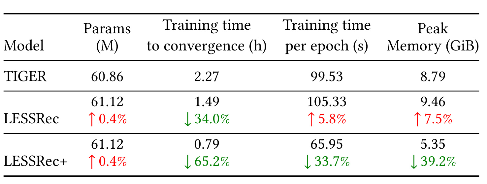
Table 6 是实际测量，更能体现“质量改进”和“执行优化”的区别。TIGER 参数为 60.86M，两种新模型均为 61.12M，约增加 0.4%，主要来自物品投影和位置参数。普通 LESSRec 到收敛的时间从 2.27 小时变成 1.49 小时，减少约 34%，但每轮从 99.53 秒变为 105.33 秒，增加 5.8%，峰值显存从 8.79 GiB 到 9.46 GiB，增加 7.5%。这并不矛盾：同层信号可能让有效训练更早达到选择标准，单次迭代却因为双分支和物品记忆更贵。不能只报道较短总时间而隐去每轮与内存的回归。
Plus 的收敛时间为 0.79 小时、每轮 65.95 秒、峰值 5.35 GiB，分别比 TIGER 少约 65.2%、33.7%、39.2%。相同参数规模下的真实短序列编码为成本下降提供支持，但这些数值依赖当前实现与任务设置。训练达到验证损失最低的总时间包含优化路径与早停效果，和同样迭代数上的吞吐不是同一指标。表中没有推理服务端到端延迟、吞吐或资源争用统计，因此这些训练成本不能直接作为线上服务容量规划依据。更短收敛和更低内存也不保证可以任意增大 batch 而无质量变化，新的 batch 设置需要重新评估。
另外，两个新模型参数完全相同，成本差却很大，正好说明常驻权重大小无法单独决定训练显存。历史长度、注意力中间矩阵和反向传播激活会影响峰值；Plus 把各层处理长度缩短，因此可以减少这类存储。普通模型则既保留原注意力又增加物品通路，峰值上涨是合理的。论文没有把峰值进一步拆成权重、优化器状态和激活，因此只能把机制当作与观测一致的解释，不能宣称已经测出每一部分占比。表内的小时、秒与GiB也分别属于时间和存储单位，应避免将几个百分数简单相加形成总节省率。
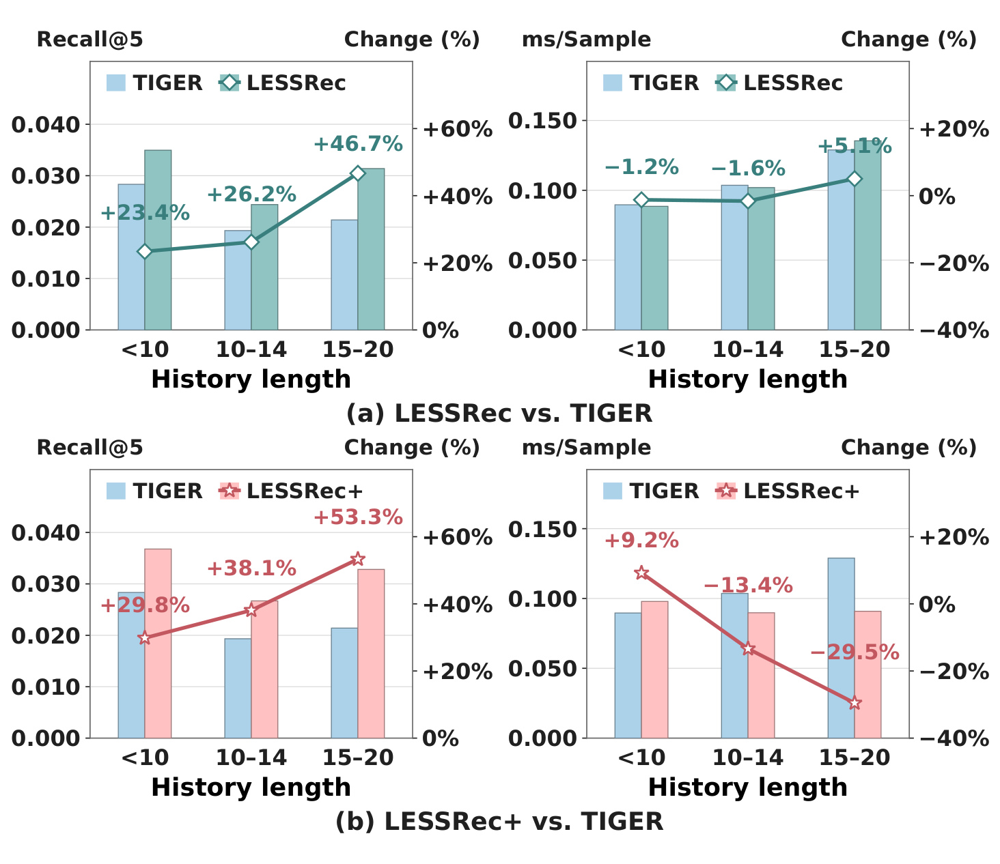
Figure 6 按 Games 的历史长度分成少于十、十到十四、十五到二十次交互三组。左列是 R@5，右列是单样本编码 CUDA 时间；柱子使用左轴的绝对值，折线使用右轴相对 TIGER 的百分比。上排 LESSRec 在三组的质量相对提高约 23.4%、26.2%、46.7%，但编码时间变化为 -1.2%、-1.6%、+5.1%，基本接近基线，最长组还更慢。下排 Plus 的质量相对增益约 29.8%、38.1%、53.3%，编码时间却在最短组增加 9.2%，到中长组才分别减少 13.4% 和 29.5%。这说明分层短序列的计算优势需要足够长度才抵过组织和运行开销，不能宣称所有请求都更快。
这张图只用种子 42，且测的是编码器 CUDA 时间，不含完整解码、前缀树检索、数据传输和服务调度。更长历史相对增幅大，不等于绝对命中率必然更高，也不意味着模型已经验证无限长度外推。不同历史组可能对应活跃用户与不同难度，观察性分桶不能直接证明额外历史长度造成了效果增长。对真实系统，应该按请求分布重新加权，并测首批缓存、padding、batch 混合和编码解码整体延迟。若多数请求都落在最短组，训练表里的平均成本优势与线上工作点可能不同。
读双轴时还应先看柱子的实际数值，再看相对线。相同的百分比改善在不同分组中对应不同绝对变化，折线跨组不能直接代表每次请求节省的毫秒。短历史上的额外开销可能来自序列分组和较小矩阵运行效率，但论文没有提供完整内核剖析来确认原因，笔记不把这一可能解释当成已验证事实。后续若重新实现并行编码，应保留短序列组作为回归门槛，避免只用最长分组证明系统效率。
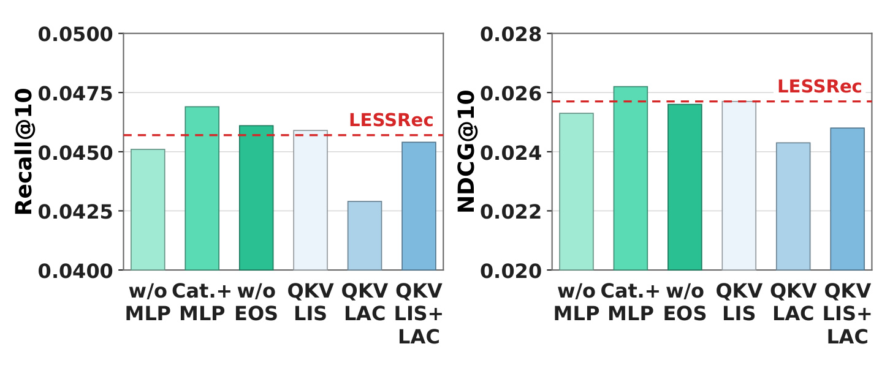
Figure 7 保留了主文没有突出但很有价值的负结果。左图为 R@10，右图为 N@10，红色虚线标出 LESSRec。去掉物品 MLP 后两指标下降，支持残差非线性投影具有作用；把均值汇聚改为拼接后接 MLP，两个指标反而都更高，说明原文默认均值不是已知最优。删除 EOS 后变化较小，作者据此认为该共享结束状态未在当前设置造成强烈跨层干扰，不能因此断言任何模型都可删除 EOS。还可看到 QKV LIS 对性能影响较小，而拆分解码端 QKV LAC 明显下降，两者同时拆也没有恢复默认质量。计算组织上的分块并不天然保留所有功能，尤其解码器还需要协调共享物品记忆与同层分支。
作者将解码端下降解释为分层块改变了不同目标层访问和组合物品级上下文的方式，这是一种可能原因，尚无完全隔离各因素的实验。它提醒复现者不要把“mask 等价”只理解成可见位置相同：投影共享、张量组织、相对偏置、分支融合和状态还原也可能改变实际运算。该图只有 Games，没有原始精确数表和多数据集统计，笔记因此只陈述可从图与正文支持的方向，不编造柱子上的精确小数。把这类负例保留，才能避免将论文概括成“越分层越好”；真正被支持的是作者特定的同层历史与整体语义互补组织。
4. 总结
LESSRec 最清楚的贡献是把生成式推荐中的两种信息来源拆开：同一量化层沿用户历史变化的证据，以及一个历史物品多个量化层共同表达的语义。LIS 保护前一种状态的形成，LAC 让目标层访问匹配状态，ILS 与双路交叉注意力补回整体物品信息。Plus 再把逻辑 mask 变成实际短序列编码，在相同总层数与参数预算下减少注意力矩阵成本。因此它同时包含建模问题和执行问题，但二者证据应分开：普通版本的质量更好不代表每轮更快，Plus 的平均成本更低也不代表最短历史请求更快。
我的判断是，这篇论文适合已经采用固定残差语义 ID 的推荐管线作为受控结构实验。先保持码表、切分、参数和训练预算不变，只打开 LIS、LAC、ILS，再单独比较 Plus，能较清楚识别当前数据的瓶颈。若原系统使用非层级标识符、码位之间存在强相关，或者物品内容比用户行为更主导，不能预设同层隔离一定有效。理论中的层轨迹独立与 Markov 假设尤其需要当作解释条件，不能直接当成真实数据事实。它对多模态或大模型记忆的启发，是先检查不同粒度是否需要独立通路再融合，而不是机械地把自然语言 token 按位置分组。
至少有五个限制应随结论一起保留。第一，三组电商评论数据及五核过滤主要覆盖已有交互的中短序列，不代表冷启动、极长历史或不同内容平台；输入最多二十物品限制了外推。第二，主表虽然有三种 tokenizer 和三种种子，Plus 对原版本仍有五项未提高，深度分配也没有全指标最优，说明参数专属化存在取舍。第三，平均训练收敛、单轮执行、峰值显存与编码器延迟是不同成本口径，原方法还在某些条件增加成本。第四，固定前缀树 beam 解码仍存在搜索宽度与误差累积问题，历史隔离没有解决整个生成链路。第五，本轮未核验独立代码入口，也没有科学复现实验、线上 A/B 或业务转化证据，不能把离线相对提高转换成确定线上收益。
后续跟进可以围绕三个可判定问题展开。首先，在目标数据固定同一码表后测每层条件预测信息和层间依赖，检验同层优先是否仍然成立；把层级可解释性和跨层相关性作为实验结果，而不是预设。其次，复现附录拼接加 MLP、EOS 和 QKV 拆分对照，记录张量布局与位置偏置，确认更快实现是否保持默认模型的功能。再次，对真实请求长度分布测端到端推理、beam 解码、峰值内存和尾延迟，明确最短组的额外开销能否被训练或长历史收益抵消。若再尝试和偏好蒸馏或新词表结合，应先分别测量，再测交互效应，不能把不同论文各自的增益直接相加。
这篇论文给出的实践顺序是先定义可见证据，再显式补回被隔离的整体语义，最后改变执行布局。三步分别有可检验的开关和反例。只有把主结果、训练成本和短历史负例同时交付，才能评估它是否适合一个具体推荐系统。
还可以把实施验收变成三个相互独立的判断：层级约束是否改变目标概率分布、合法前缀树是否覆盖全部候选物品、短序列执行是否节省真实设备时间。前者需要质量和消融，第二项需要词表及解码完整性检查，第三项需要性能测量。分别通过后再讨论联合收益，能够避免用一个离线平均分同时替代建模、正确性与部署三个问题。